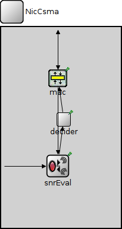
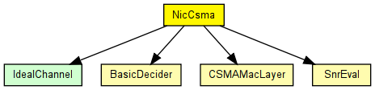
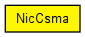

The CsmaNic contains a csma-like MAC layer. The SnrEval module is used as the mac needs a RadioState to be published. However as still the BasicDecider is used all messages will be delivered to the MAC and no packets get lost
This nic is intended to be used in order to test the implementation of the csma protocol.
IMPORTANT:
In order to work with the ChannelControl module the snrEval
module has to be called "snrEval" in the ned file.
This component has been taken over from Mobility Framework 1.0a5.
See also: BasicMacLayer, BasicDecider, BasicSnrEval
Author: Marc Loebbers
The following diagram shows usage relationships between types. Unresolved types are missing from the diagram. Click here to see the full picture.
The following diagram shows inheritance relationships for this type. Unresolved types are missing from the diagram. Click here to see the full picture.
| Name | Direction | Size | Description |
|---|---|---|---|
| uppergateIn | input |
to upper layers |
|
| uppergateOut | output |
from upper layers |
|
| radioIn | input |
to receive AirFrames |
| Name | Type | Default value | Description |
|---|---|---|---|
| mac.debug | bool | false |
debug switch |
| mac.headerLength | int | ||
| mac.queueLength | int | ||
| decider.coreDebug | bool | false |
debug switch for the core framework |
| snrEval.channelNumber | double | 0 |
channel identifier |
| snrEval.debug | bool | false |
debug switch |
| snrEval.transmitterPower | double | ||
| snrEval.bitrate | double | ||
| snrEval.headerLength | int | ||
| snrEval.thermalNoise | double | ||
| snrEval.pathLossAlpha | double | ||
| snrEval.sensitivity | double |
// // The CsmaNic contains a csma-like MAC layer. // The SnrEval module is used as the mac needs a RadioState to be published. // However as still the BasicDecider is used all messages will be delivered to // the MAC and no packets get lost // // This nic is intended to be used in order to test the implementation // of the csma protocol. // // IMPORTANT:<br> In order to work with the ChannelControl module the snrEval // module has to be called "snrEval" in the ned file. // // This component has been taken over from Mobility Framework 1.0a5. // // @see BasicMacLayer, BasicDecider, BasicSnrEval // @author Marc Loebbers // module NicCsma { gates: input uppergateIn; // to upper layers output uppergateOut; // from upper layers input radioIn @labels(AirFrame); // to receive AirFrames submodules: mac: CSMAMacLayer { parameters: @display("p=96,87"); } decider: BasicDecider { parameters: @display("p=106,157"); } snrEval: SnrEval { parameters: @display("p=96,236"); } connections: radioIn --> snrEval.radioIn; decider.uppergateOut --> { @display("m=m,50,50,75,0"); } --> mac.lowergateIn; snrEval.uppergateIn <-- { @display("m=m,25,0,25,0"); } <-- mac.lowergateOut; snrEval.uppergateOut --> { @display("m=m,73,0,50,50"); } --> decider.lowergateIn; mac.uppergateOut --> uppergateOut; mac.uppergateIn <-- uppergateIn; }